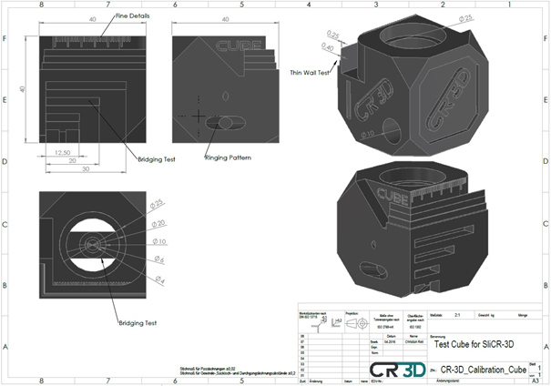
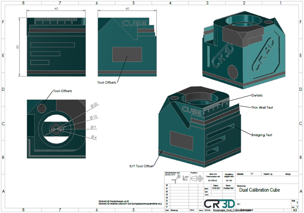
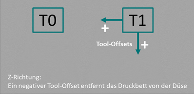

CR-3D Cube Calibration |
||
|
This page allows you to print the CR-3D calibration cube. It's useful to see if your printer is accurate and to calibrate some settings. First thing is to select the single or dual Cube version.

You can test a lot of parameters with the single extruder cube. there are many ways to check the dimensional accuracy. Holes, openings, external dimensions and much more.
There are also places where bridging is necessary. There are places with different bridging lengths for this purpose in order to be able to test the behavior.
Furthermore there are fine details and thin walls to test the precision of the printer.
In addition, a ringing test was built in to examine the vibration behavior of the printer.
You can test a lot of parameters with the dual extruder calibration cube. there are many ways to check the dimensional accuracy and the Tool Offsets of your dual extruder
The tool offsets in the XY direction can be determined most easily with the lower layers. For this purpose, in the lower part of the cube, attention is paid to whether the various elements of the cube are shifted in one direction. To do this, the distance is simply determined using a caliper and then readjusted in the printer. There are also other multi-material locations throughout the cube, where the accuracy of fit of the two tools can be checked.
There are also places where bridging is necessary. There are places with different bridging lengths for this purpose in order to be able to test the behavior.
furthermore there are fine details and thin walls to test the precision of the printer

To correct the tool offsets, we have compiled an overview of the coordinate directions of tool 1 (right tool).
